Wrapper to create plots and tables within a pipe-workflow
sjplot.RdThis function has a pipe-friendly argument-structure, with the
first argument always being the data, followed by variables that
should be plotted or printed as table. The function then transforms
the input and calls the requested sjp.- resp. sjt.-function
to create a plot or table.
Both sjplot() and sjtab() support grouped data frames.
sjplot(data, ..., fun = c("frq", "grpfrq", "xtab", "aov1", "likert", "stackfrq")) sjtab(data, ..., fun = c("xtab", "stackfrq"))
Arguments
| data | A data frame. May also be a grouped data frame (see 'Note' and 'Examples'). |
|---|---|
| ... | Names of variables that should be plotted, and also further arguments passed down to the sjPlot-functions. See 'Examples'. |
| fun | Plotting function. Refers to the function name of sjPlot-functions. See 'Details' and 'Examples'. |
Value
See related sjp. and sjt.-functions.
Details
Following fun-values are currently supported:
"aov1"calls
sjp.aov1. The first two variables indataare used (and required) to create the plot."frq"calls
sjp.frq. Ifdatahas more than one variable, a plot for each variable indatais plotted."grpfrq"calls
sjp.grpfrq. The first two variables indataare used (and required) to create the plot."likert"calls
plot_likert.datamust be a data frame with items to plot."stackfrq"calls
sjp.stackfrqorsjt.stackfrq.datamust be a data frame with items to create the plot or table."xtab"calls
sjp.xtaborsjt.xtab. The first two variables indataare used (and required) to create the plot or table.
Note
The ...-argument is used, first, to specify the variables from data
that should be plotted, and, second, to name further arguments that are
used in the subsequent plotting functions. Refer to the online-help of
supported plotting-functions to see valid arguments.
data may also be a grouped data frame (see group_by)
with up to two grouping variables. Plots are created for each subgroup then.
Examples
library(dplyr)#> #>#> #> #>#> #> #>#> #> #>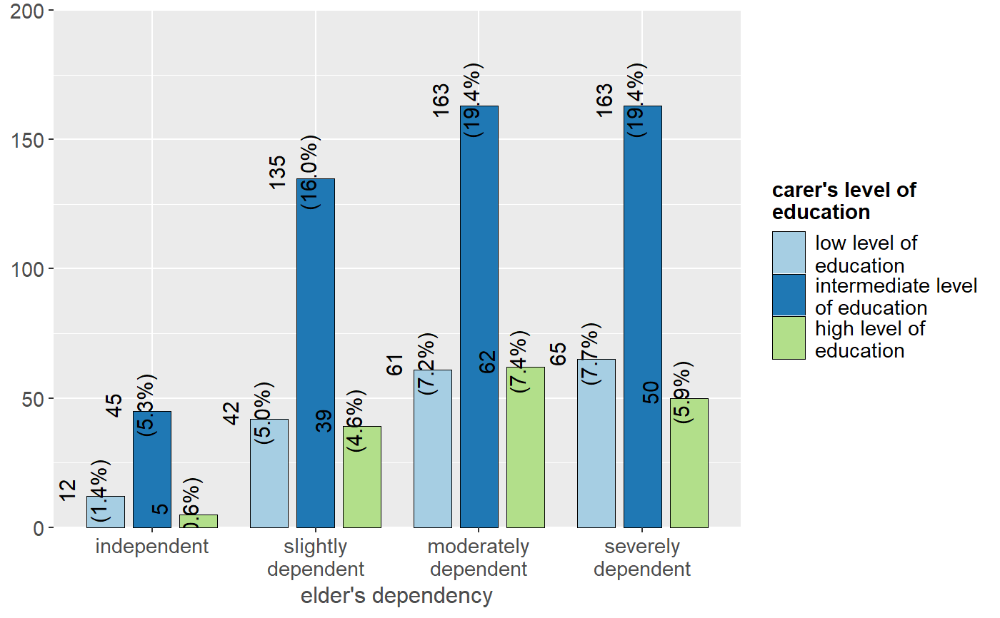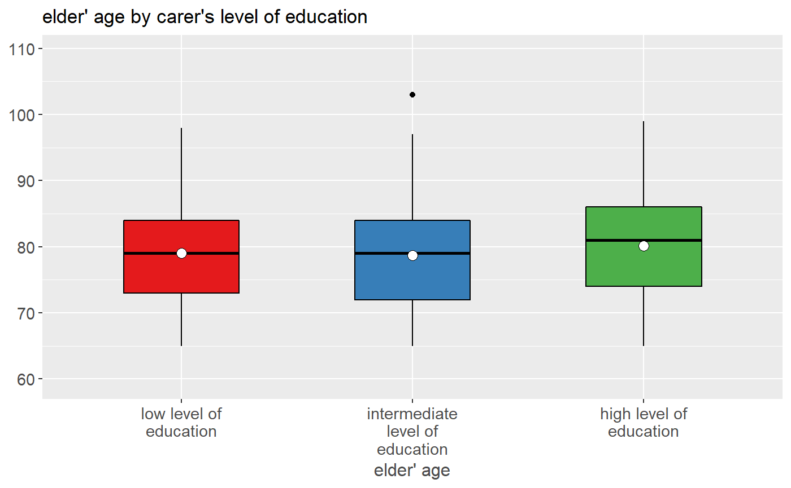# Grouped frequencies efc %>% sjplot(e42dep, c172code, fun = "grpfrq")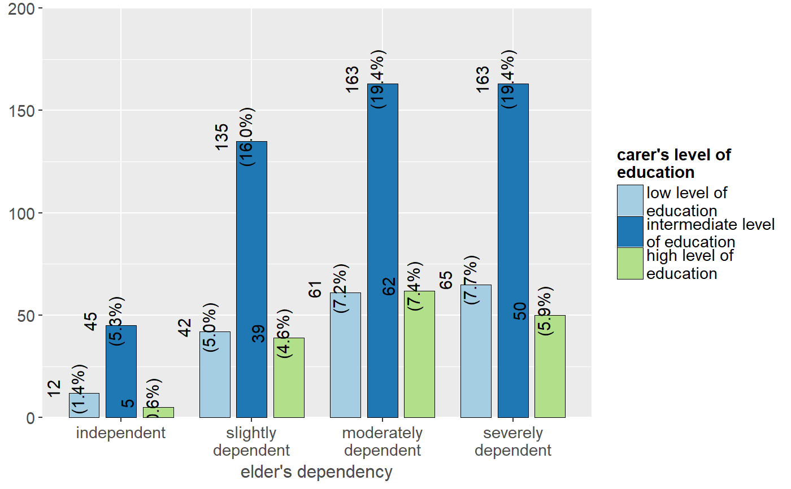# Grouped frequencies, as box plots efc %>% sjplot(e17age, c172code, fun = "grpfrq", type = "box", geom.colors = "Set1")# frequencies, as plot grid efc %>% select(e42dep, c172code, e16sex, c161sex) %>% sjplot() %>% plot_grid()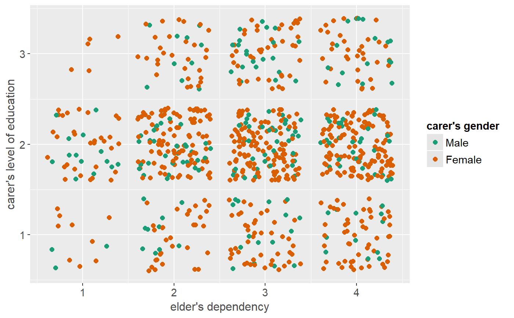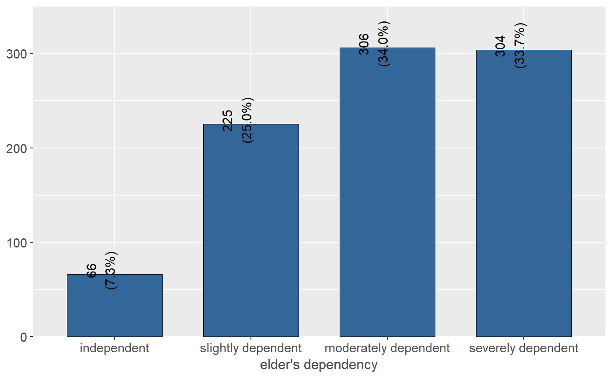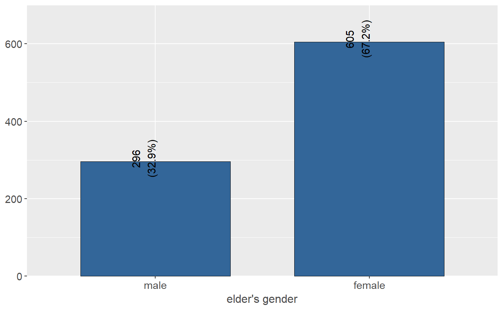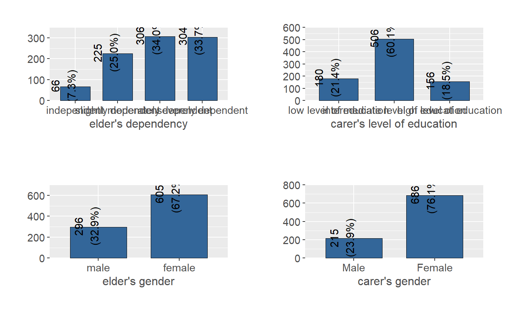# plot grouped data frame efc %>% group_by(e16sex, c172code) %>% select(e42dep, e16sex, c172code) %>% sjplot(wrap.title = 100) # no line break for subtitles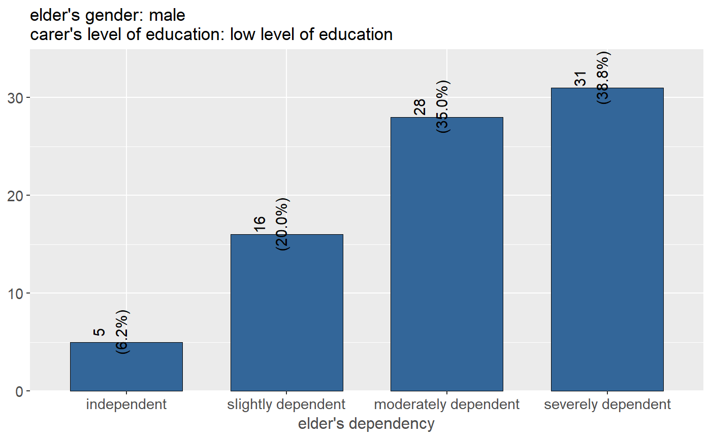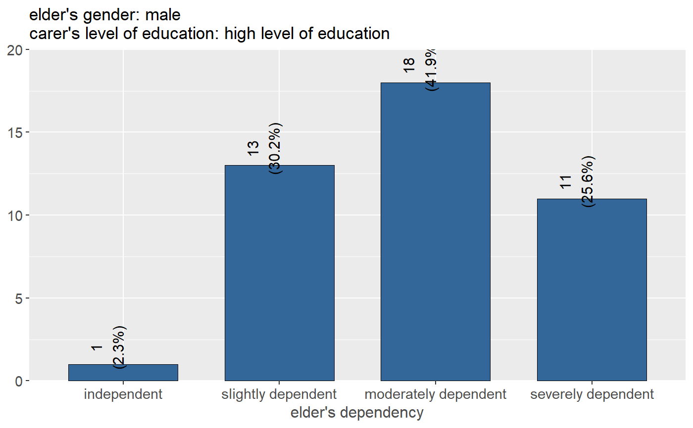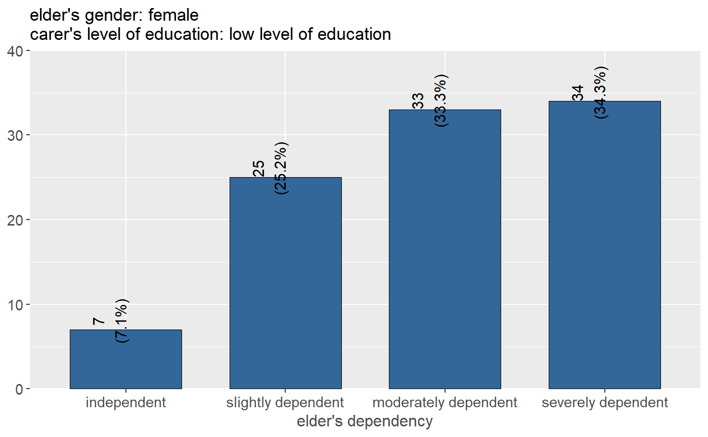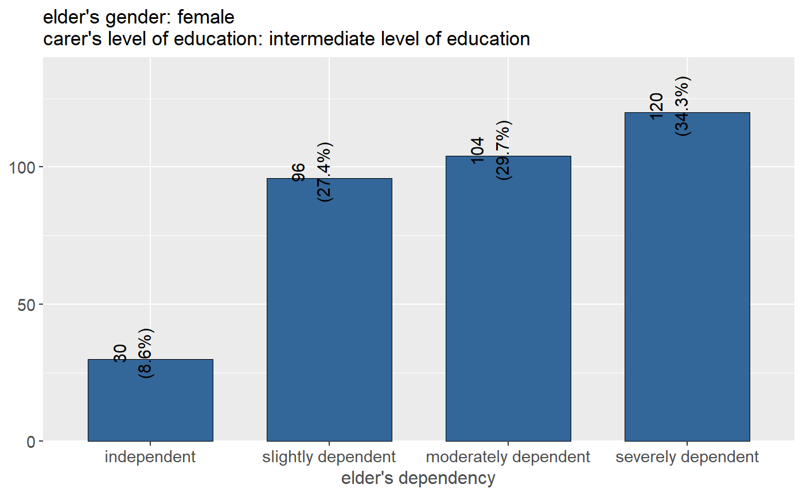# NOT RUN { # table output of grouped data frame efc %>% group_by(e16sex, c172code) %>% select(e42dep, n4pstu, e16sex, c172code) %>% sjtab(fun = "xtab", use.viewer = FALSE) # open all tables in browser # }